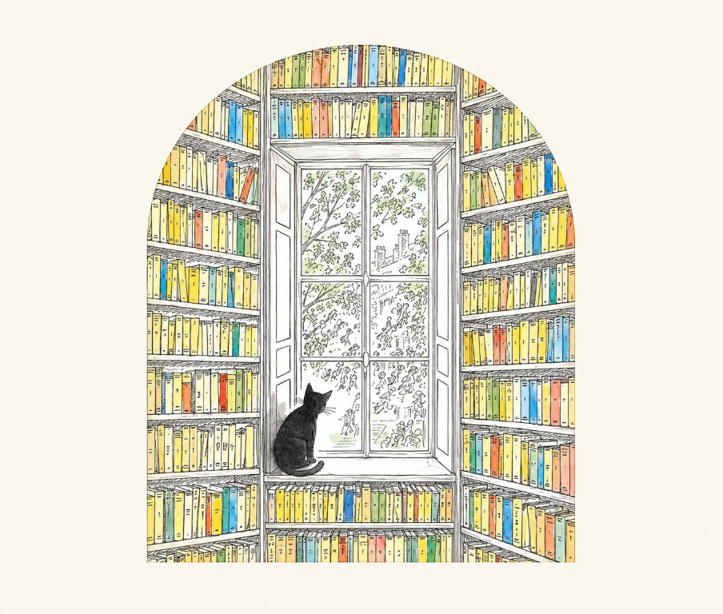

ΚΑΛΩΣ ΗΡΘΑΤΕ ΣΤΟ ΞΕΝΟΠΟΥΛΕΙΟ
Κάθε βιβλίο,
μια ανοιχτή
πόρτα στον κόσμο.
Εδώ συναντιούνται οι ιστορίες, η μνήμη και η χαρά της ανακάλυψης. Ένας τόπος για τα παιδιά, τους ανθρώπους των βιβλίων και τη δημιουργική μάθηση.

Μια πόρτα ανοιχτή στη φαντασίαΕΝΑΣ ΤΟΠΟΣ, ΠΟΛΛΕΣ ΔΙΑΔΡΟΜΕΣ
Ανακαλύψτε το Ξενοπούλειο
Τέσσερις αφετηρίες για να γνωριστούμε.
Ξενοπούλειος
Παιδική Βιβλιοθήκη
Ένα ταξίδι στις σελίδες, στη φαντασία και στη χαρά του βιβλίου.
Η βιβλιοθήκη 02 / ΜΝΗΜΗΜουσείο
Ξενόπουλου
Μια διαδρομή γνωριμίας με τον Γρηγόριο Ξενόπουλο και το έργο του.
Το μουσείο 03 / ΚΟΙΝΟΤΗΤΑΟ σύλλογός
μας
Οι άνθρωποι, οι ιδέες και η διάθεση να δημιουργούμε μαζί.
Ο σύλλογός μας 04 / ΣΥΝΕΡΓΑΣΙΑΔίκτυο
Freinet
Η ελεύθερη έκφραση, η συνεργασία και η μάθηση μέσα από την πράξη.
Το δίκτυοΟι ιστορίες μάς φέρνουν κοντά.
Μαζί, τους δίνουμε συνέχεια.
ΠΟΛΙΤΙΣΜΟΣ
ΣΥΝΕΡΓΑΣΙΑ
Ξενοπούλειος Παιδική Βιβλιοθήκη
Τα βιβλία είναι η αρχή για αμέτρητες ανακαλύψεις. Αυτή η ενότητα είναι αφιερωμένη στην παιδική ανάγνωση και στη συνάντηση των παιδιών με τον κόσμο των ιστοριών.
Για παιδιά
Δράσεις φιλαναγνωσίας, δημιουργικής έκφρασης και ανακάλυψης για παιδιά.
Για εκπαιδευτικούς και ενήλικες
Δράσεις, συναντήσεις και υλικό για εκπαιδευτικούς, γονείς και ενήλικες αναγνώστες.
Μουσείο Ξενόπουλου
Μια αφετηρία για τη γνωριμία με τη ζωή και το λογοτεχνικό έργο του Γρηγορίου Ξενόπουλου, και για τη σύνδεση της λογοτεχνικής μνήμης με το σήμερα.
Ζωή και έργο του Ξενόπουλου
Η ζωή, η εποχή και η πλούσια λογοτεχνική διαδρομή του Γρηγορίου Ξενόπουλου.
Επισκέψεις στο Μουσείο
Πληροφορίες για την οργάνωση και τον προγραμματισμό επισκέψεων στο Μουσείο Ξενόπουλου.
Ο σύλλογός μας
Ένας χώρος αφιερωμένος στους ανθρώπους που θέλουν να μοιράζονται την αγάπη τους για το βιβλίο και τον πολιτισμό. Γιατί οι όμορφες ιδέες μεγαλώνουν όταν τις μοιραζόμαστε.
Φορείς με τους οποίους συνεργαζόμαστε
Παρουσίαση των φορέων, των ομάδων και των ανθρώπων με τους οποίους συνεργαζόμαστε.
Εκδηλώσεις που διοργανώνονται από κοινού
Εκδηλώσεις και πρωτοβουλίες που σχεδιάζονται και πραγματοποιούνται μαζί με τους συνεργαζόμενους φορείς.
Δίκτυο Freinet
Ελεύθερη έκφραση, συνεργασία και ενεργός συμμετοχή στη μάθηση. Μια ενότητα για την παιδαγωγική Freinet και τις συναντήσεις της με την ανάγνωση και τη δημιουργία.
Δανειστική βιβλιοθήκη
Επιλέξτε εγγραφή μέλους, σύνδεση στον προσωπικό σας χώρο ή αναζήτηση βιβλίων. Οι αιτήσεις εγγραφής και δανεισμού ελέγχονται από τη βιβλιοθήκη.
Νέα - Ανακοινώσεις
Εδώ θα δημοσιεύονται τα νέα και οι ανακοινώσεις μας. Δεν έχουν αναρτηθεί ακόμη ανακοινώσεις.
Στιγμές από προηγούμενες δράσεις
Φωτογραφίες, αναμνήσεις και στιγμές από δράσεις που έχουν ήδη πραγματοποιηθεί.
Επικοινωνία
Διεύθυνση: Γαΐτα 5, Ζάκυνθος 29100
Email βιβλιοθήκης: xenopouleios.bibliothiki@gmail.com
Email συλλόγου: filoixenopouliou@gmail.com
Τηλέφωνο: 26950 45078